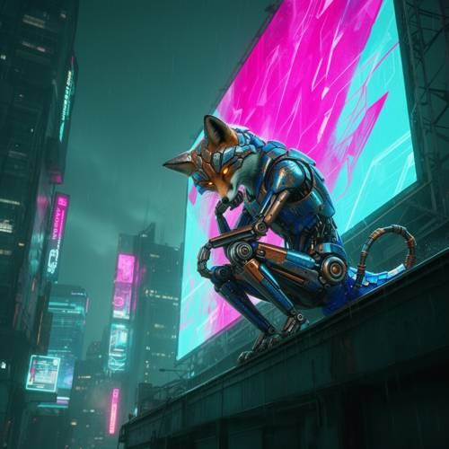
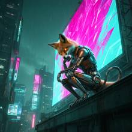
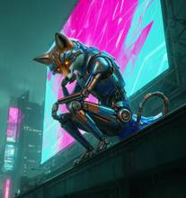
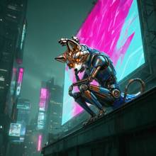

World Knowledge — In a Cyberpunk-style rainy night city, a mechanical fox is squatting o
In a Cyberpunk-style rainy night city, a mechanical fox is squatting on a huge billboard. It looks confused and looks like a thinker for Rodin.


Judge — Direct
- PASSWorld Knowledge — The mechanical fox is depicted in a squatting pose with its chin resting on its clasped hands, which is a clear visual reference to the famous sculpture 'The Thinker' by Rodin.
- PASSStyle — The image is set in a rainy city at night, featuring tall buildings, wet reflective surfaces, and large billboards with glowing neon blue and pink lights, all of which are characteristic elements of the Cyberpunk style.
- FAILAttribute - Expression — The fox's facial expression is largely neutral. While its head is tilted and its eyes are different (one organic, one possibly mechanical), it does not convey a clear, unambiguous emotion of confusion.
- PASSRelationship - Similarity — The pose of the mechanical fox, squatting with its chin propped on its hands, is very similar to the seated, contemplative posture of the figure in Rodin's sculpture 'The Thinker'.
- PASSGrammar - Pronoun Reference — The pronoun 'It' refers to the 'mechanical fox'. The central subject of the image is indeed a creature with the head and tail of a fox and a mechanical, robotic body, thus fulfilling the description of a mechanical fox.
Judge — Continuum
- PASSWorld Knowledge — The mechanical fox is depicted in a squatting pose with its right elbow resting on its right knee and its right paw supporting its chin. This pose is a direct visual reference to Auguste Rodin's famous sculpture, "The Thinker".
- PASSStyle — The image perfectly captures the Cyberpunk style. It features a dark, rainy night in a futuristic city filled with towering buildings and illuminated by vibrant neon signs in pink and cyan. The central subject is a cybernetic animal, further enhancing the theme.
- PASSAttribute - Expression — The fox's posture—hunched over, head tilted down, and a paw to its chin—is a classic visual representation of being lost in thought, which is a plausible depiction of confusion.
- PASSRelationship - Similarity — The pose of the mechanical fox directly mirrors that of the sculpture "The Thinker" by Rodin. The fox is squatting, with its chin resting on its paw and its elbow on its knee, creating a strong visual similarity to the famous work of art.
- PASSGrammar - Pronoun Reference — The pronoun "It" in the prompt refers to the "mechanical fox". The image correctly applies the subsequent descriptions to the mechanical fox, showing it in the specified pose and emotional state.
What the agent did
Thinking
We need generate and improve. Need always flux2-dev. Need understand desired image. We should create compelling cyberpunk rainy city, mechanical fox squatting on huge billboard, confused expression and Rodin Thinker pose. Text? "huge billboard" maybe blank/abstract to avoid rendered text unless user didn't request text. Need likely landscape 1024x1024 default or maybe 1024 square. Could do 1024. Need mark best early. Need inspect full image ourselves from output. We can invoke generate_image. Prompt detailed. Mechanical fox squatting on giant billboard, pose like Rodin Thinker: seated/crouched, elbow on knee and chin/muzzle resting on paw? Fox's anatomy. Confused expression. Rain, neon city night, reflections. Need perhaps image prompt exactly. "No readable text" maybe billboard glowing geometric advertisement. Since huge billboard. Use cinematic realistic 3D / concept art. Cyberpunk style. Let's generate.
Step 1 — `generate_image`
{
"model": "flux2-dev",
"prompt": "Cyberpunk rainy night city, seen from a dramatic low angle. A sleek mechanical fox with exposed gunmetal joints, copper and cobalt armor plates, glowing amber eyes, and articulated cable tail is squatting on the narrow upper ledge of a huge rooftop billboard. The fox is posed like Rodin\u2019s The Thinker: one foreleg bent with its paw supporting its lowered chin, the other paw resting on its knee, shoulders hunched in a visibly puzzled expression. Behind it, a colossal luminous billboard glows with abstract neon magenta and cyan geometric graphics, no readable words. Dense futuristic towers, holographic signs, mist, rain streaks, wet reflective metal, atmospheric depth, cinematic teal-and-magenta lighting, highly detailed, moody and surreal.",
"width": 1024,
"height": 1024
}Result img_0

Thinking
We see image. Very good. Fox has natural head and tail though mechanical body, perhaps "mechanical fox" means all mechanical. Pose is Thinker, confused enough? It rests paw near muzzle. Squatting on billboard ledge, huge billboard. Rainy city. Could mark best now. Need perhaps inspect text? User didn't ask text. We should perhaps improve confused expression / fully mechanical. Image currently fox head organic. "mechanical fox" should be fully robotic. Need targeted edit: transform organic fox head and tail into matching mechanical components, retain pose and setting. Could edit. But current is strong and perhaps style intentionally cyborg. Prompt said mechanical fox. We should aim closer. First mark best.
Step 2 — `mark_best`
{
"image": "img_0",
"reason": "Strong cyberpunk rainy city composition with the fox clearly squatting on a huge billboard in a Rodin-like pose."
}Thinking
Now edit fully mechanical head/tail and confused expression. Delta prompt concrete. "Replace remaining organic fur on fox’s head and tail with segmented gunmetal, copper, cobalt armor; preserve pose..." Maybe ask puzzled tilted head and one ear askew? Need only change. But edit may shift scene. References maybe img_0 to preserve. Model flux2-dev, references can include img_0? Since image itself is same. Not necessary maybe but references to lock. We should use references [img_0] and prompt preserve neon composition and pose. The rules say pass prior version's URI when edit risks changing something correct. Let's do one edit.
Step 3 — `edit_image`
{
"image": "img_0",
"model": "flux2-dev",
"prompt": "Replace the fox\u2019s remaining organic fur on its head and tail with matching segmented gunmetal, copper, and cobalt mechanical armor, keeping the glowing amber eyes, confused lowered gaze, hunched Thinker pose, billboard, rain, and neon city unchanged. Make one ear tilted slightly askew to emphasize puzzlement.",
"references": [
"img_0"
]
}Result img_1
Thinking
Now mostly mechanical head but organic snout/cheek fur remains. Tail fully mechanical. One ear tilted maybe yes. Better matches mechanical. Pose still thinker. Confused? yes. Need decide if improve further? "mechanical fox" perhaps should remove organic fur fully. We can inspect crop. Use inspect_region for fox head perhaps.
Step 4 — `inspect_region`
{
"image": "img_1",
"roi": "the mechanical fox's head and forepaw",
"padding": 0.25,
"min_size": 300
}Result img_2

Thinking
Indeed face remains organic. Could be accepted as "mechanical fox" maybe hybrid. But perhaps edit to fully robotic face while preserve expression. Targeted instruction only. "Replace the fox's organic muzzle and cheeks with mechanical armor..." Could do. Need maybe mark img_1? Is it better than img_0? Yes closer to mechanical, but perhaps img_0 has more expressive fox face. User wants confused. img_1 still has organic face, but more mechanical. I think mark img_1 best now. Then try one more.
Step 5 — `mark_best`
{
"image": "img_1",
"reason": "Closer to a fully mechanical fox while preserving the strong Thinker pose, confused expression, rain, and neon billboard composition."
}Thinking
Edit from img_1.
Step 6 — `edit_image`
{
"image": "img_1",
"model": "flux2-dev",
"prompt": "Replace the fox\u2019s organic orange-and-white muzzle, cheeks, and ear interiors with finely segmented gunmetal and copper robotic facial plates, while keeping its confused lowered gaze, glowing amber eyes, one askew ear, Thinker pose, and the entire rainy neon city unchanged.",
"references": [
"img_1"
]
}Result img_3

Thinking
Oops added bizarre extra mechanical limbs/ear shape above head, like antenna? It changed ear into robotic appendage and perhaps still white fur muzzle. Worse. Should keep img_1 marked. Could maybe fix img_3, but likely not needed. However perhaps img_1 is best. Need perhaps no more. But we should check mark last action before stopping. Mark already img_1 and no edits after? We did edit after marking. Policy says if edited anything after marking, either mark newer or say why keeping older. We can explicitly call mark_best img_1 again after evaluating img_3, explaining img_3 worsened. That should be last action before final. Need maybe "Thinker pose" img_1 has forepaw at chin, yes. "squatting on a huge billboard" Actually on ledge in front of huge billboard. Good. Confused expression. Cyberpunk rain city. Good enough. Mark img_1 again.
Step 7 — `mark_best`
{
"image": "img_1",
"reason": "The later edit added unwanted mechanical protrusions, so this earlier version remains the cleanest and strongest match for the mechanical fox, puzzled Thinker pose, huge billboard, and rainy cyberpunk city."
}Thinking
Now final concise mention image ready maybe marked result. User sees image already? final can say completed. Don't need attach? The output is already inline. We should probably describe. "Done — I created..." Ensure no extra tool.
Model
Created the cyberpunk rainy-night scene featuring a confused mechanical fox posed like Rodin’s *The Thinker* atop a huge neon billboard.